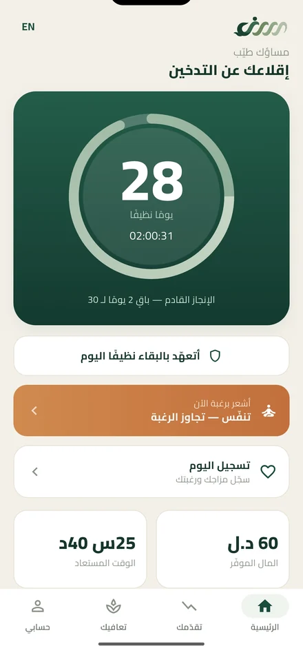
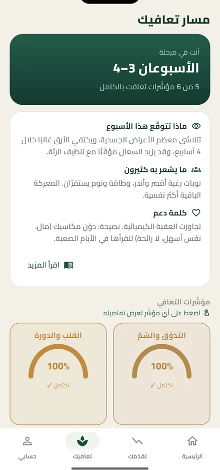
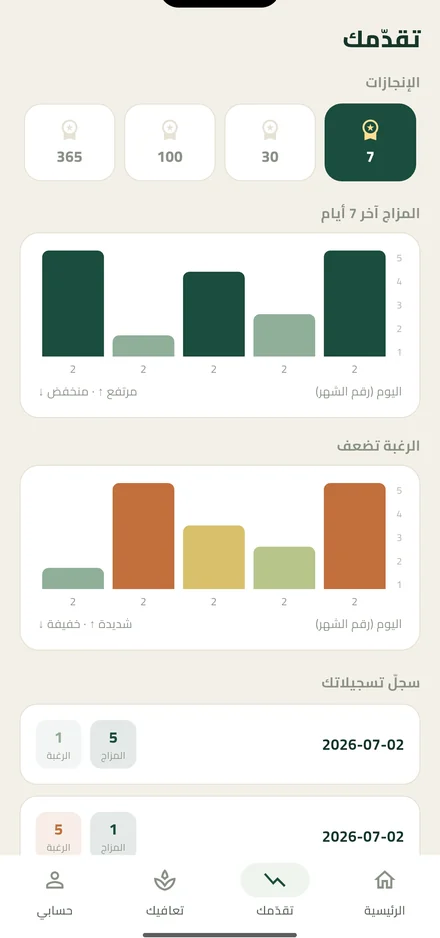
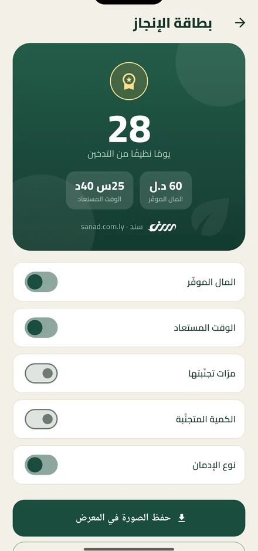

كل يوم نظيف
يُحتسب.
Every clean day
counts.
سند رفيقك الهادئ للإقلاع عن العادات الضارّة. يحسب أيامك النظيفة، والمال والوقت اللذين وفّرتهما، ويريك ما يتعافى في جسمك أسبوعًا بأسبوع — بلا حساب، وبلا تتبّع، وكل شيء يبقى على جهازك. Sanad is your calm companion for quitting harmful habits. It counts your clean days, the money and time you've saved, and shows what heals in your body week by week — no account, no tracking, everything stays on your device.
التطبيق في مراحله الأخيرة قبل الإطلاق — تابعنا على فيسبوك لتعرف لحظة نزوله. The app is in its final steps before launch — follow us on Facebook to know the moment it lands.

اعرف ما يتعافى في جسمك — أسبوعًا بأسبوعSee what heals in your body — week by week
لكل عادة مسارها الخاص. يخبرك سند ماذا يحدث الآن، وما الذي ينتظرك، ولماذا تشعر بما تشعر به — بمحتوى مبني على مصادر موثوقة مثل منظمة الصحة العالمية وNHS وCDC. Every habit has its own path. Sanad tells you what's happening now, what's ahead, and why you feel the way you do — grounded in trusted sources like the WHO, NHS and CDC.
- لوحة الأسبوع الحالي: ماذا تتوقّع، وكيف تشعر، وما يساعدكA panel for this week: what to expect, how you feel, what helps
- مؤشّرات تتقدّم مع أيامك، ومصادر لكل معلومةIndicators that advance with your days, with sources for every claim

سجّل مزاجك ورغبتك، وشاهد الخط يصعدLog your mood and cravings, watch the line climb
تسجيل يوميّ بسيط يحوّل شعورك إلى صورة واضحة. مع الوقت ترى النمط: الرغبة تهدأ، والمزاج يتحسّن، والأيام تتراكم. A simple daily check-in turns how you feel into a clear picture. Over time you see the pattern: cravings settle, mood lifts, days add up.
- رسوم لمزاجك ورغبتك عبر 7 و30 و100 و365 يومًاCharts for mood and cravings across 7, 30, 100 and 365 days
- إنجازات عند 7 و30 و100 و365 يومًاMilestones at 7, 30, 100 and 365 days

شارك انتصارك — أنت من يقرّر ما يظهرShare your win — you decide what shows
بطاقة جميلة تحتفي بأيامك. أخفِ المال أو الوقت أو حتى نوع العادة نفسها بضغطة واحدة، ثم شاركها متى شئت — أو احتفظ بها لنفسك. A beautiful card that celebrates your days. Hide the money, the time, or even the habit itself with one tap, then share it whenever you like — or keep it to yourself.
- إظهار انتقائي: كل رقم له مفتاحSelective disclosure: every number has a switch
- احفظها في معرض صورك أو شاركها مباشرةSave it to your photos or share it directly

خصوصيتك ليست ميزة — إنها الأساسYour privacy isn't a feature — it's the foundation
التعافي شيء شخصي. لذلك بُني سند بحيث لا نعرف عنك شيئًا — حرفيًا.Recovery is personal. So Sanad is built so that we know nothing about you — literally.
بلا حسابNo account
لا اسم، لا بريد، لا رقم هاتف. تفتح التطبيق وتبدأ.No name, no email, no phone number. Open it and start.
دون إنترنتWorks offline
كل شيء يعمل على جهازك. لا خوادم، ولا بيانات تغادر هاتفك.Everything runs on your device. No servers, no data leaves your phone.
بلا تتبّعNo tracking
لا إعلانات، ولا تحليلات، ولا أطراف ثالثة. أبدًا.No ads, no analytics, no third parties. Ever.
مهما كانت العادةWhatever the habit
اختر ما تريد الإقلاع عنه — أو اكتب عادتك بنفسك.Pick what you want to quit — or write your own.
وإن تعثّرت؟And if you slip?
التعافي ليس خطًّا مستقيمًا. الانتكاسة ليست فشلًا — سند يحفظ إنجازاتك السابقة، ويعيد ضبط العدّاد بلطف، ويقف معك من جديد. بلا لوم، وبلا خطاب مؤلم. Recovery isn't a straight line. A relapse isn't failure — Sanad keeps your past milestones, resets the counter gently, and stands with you again. No blame, no lecture.
تنبيه: سند أداة دعم ذاتي، وليس خدمة طبّية أو علاجية أو طارئة. إن كنت في أزمة، تواصل مع خدمات الطوارئ المحلية. Note: Sanad is a self-help tool, not a medical, therapy, or emergency service. If you're in crisis, contact your local emergency services.